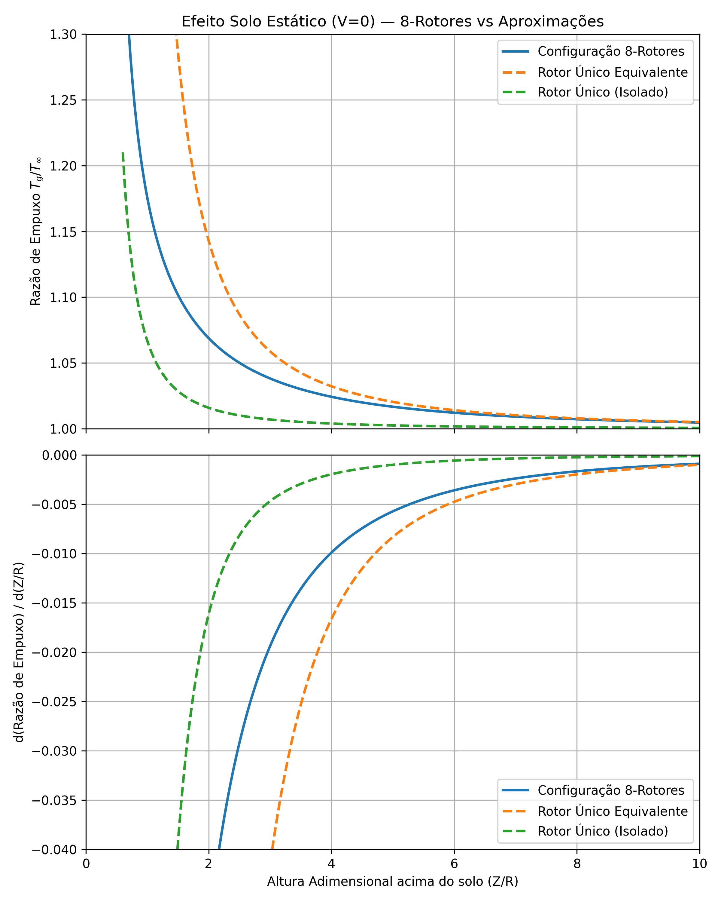
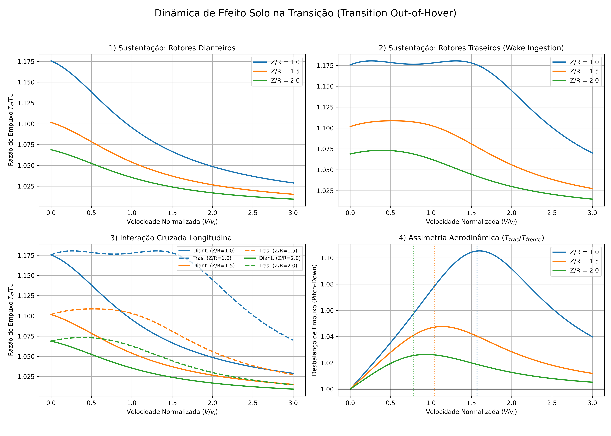

Sumário
- Resumo
- Introdução
- Princípio Físico Fundamental — Conservação de Momento
- Asa Fixa — Esteira em Ferradura e Efeito Solo
- Asa Rotativa — O Modelo de Cheeseman & Bennett
- Generalização para Arranjo de N Rotores (PFI)
- Prova de Consistência Matemática
- Estudo de Caso — Efeito Solo Estático em 8 Rotores
- Convergência Física em Alta Velocidade — Asa Fixa vs. Asa Rotativa
- Assimetria de Tração e Estabilidade Longitudinal em Efeito Solo
Resumo
A predição da interação aerodinâmica com o solo (In-Ground Effect — IGE) é um requisito crítico no desenvolvimento de leis de controle para aeronaves eVTOL. Este documento persegue três objetivos centrais.
O primeiro objetivo é comparar o efeito solo em arquiteturas de asa fixa e asa rotativa, identificando os mecanismos físicos distintos de cada topologia de esteira e demonstrando que, apesar das formulações analíticas aparentemente divergentes, ambas as arquiteturas convergem para o mesmo resultado assintótico em alta velocidade: o enfraquecimento progressivo do campo induzido até a anulação do efeito solo.
O segundo objetivo é derivar, a partir dos primeiros princípios do escoamento potencial e do modelo clássico de Cheeseman & Bennett (1955), uma formulação generalizada para uma matriz arbitrária de \(N\) rotores operando em voo de hover e transição com velocidade de avanço \(V\). A generalização é fundamentada no princípio de superposição de potenciais (Potential Flow Interaction — PFI), preservando coerência com a conservação de vazão mássica de Glauert [2].
O terceiro objetivo é compreender como a velocidade de avanço introduz uma assimetria de tração entre os rotores dianteiros e traseiros quando em efeito solo, quantificando o diferencial de empuxo \(\Delta T\) em função de \(V/v_i\) e analisando seu impacto na derivada de estabilidade em velocidade \(C_{M_u}\) — em particular, o mecanismo pelo qual \(C_{M_u}\) pode inverter de sinal e gerar um momento de arfagem não comandado em aeronaves multirotores durante a transição próxima ao solo.
Introdução
Na década de 1950, com o amadurecimento dos helicópteros, tornou-se imperativo quantificar o ganho de empuxo durante operações próximas ao solo. O solo impõe uma condição de contorno de não-penetração que obriga a esteira do rotor a desacelerar e expandir, aumentando a pressão estática sob o disco e reduzindo a potência induzida necessária para sustentar a aeronave.
Em 1955, I. C. Cheeseman e A. S. Bennett publicaram o trabalho seminal “The Effect of the Ground on a Helicopter Rotor in Forward Flight”. O modelo utilizou a Teoria do Escoamento Potencial e o Método das Imagens para obter uma solução analítica fechada, eliminando a necessidade de integrações numéricas do campo de vórtices. O resultado foi uma única equação escalar que relaciona o ganho de empuxo IGE à altura normalizada e ao ângulo de inclinação da esteira (skew).
Com o advento das arquiteturas eVTOL com Propulsão Elétrica Distribuída (PED), aplicar a equação de 1955 isoladamente a cada rotor ignora as interferências cruzadas entre esteiras adjacentes (o fountain effect). O desafio moderno reside em generalizar a física clássica para \(N\) rotores operando em qualquer regime de velocidade, mantendo o rigor das equações governantes originais. Adicionalmente, a presença de fileiras dianteiras e traseiras de rotores, com dinâmicas de esteira distintas próximas ao solo, introduz uma assimetria de tração com consequências para a estabilidade longitudinal.
Escopo: o modelo desenvolvido é válido em todo o envelope de voo próximo ao solo, desde o hover estático (\(V = 0\)) até o voo de transição (\(V > 0\)). A hipótese fundamental é a linearidade do escoamento potencial (Equação de Laplace), com a esteira representada por singularidades de campo distante.
Princípio Físico Fundamental — Conservação de Momento
A geração de força vertical obedece à conservação de momento linear no volume de controle. Pela Teoria do Disco Atuador, a velocidade induzida para baixo pelo disco é \(v_i\) e a velocidade na esteira distante é \(2v_i\) (a esteira acelera progressivamente do disco até o campo distante). A variação total de momento do escoamento é, portanto, \(\dot{m} \cdot 2v_i\):
\[F = \dot{m} \cdot 2v_i \tag{1}\]
onde \(\dot{m} = \rho A U_0\) é a vazão mássica que atravessa a superfície sustentadora, \(A = \pi R^2\) é a área do disco, \(V\) é a velocidade de avanço da aeronave e \(U_0 = \sqrt{V^2 + v_i^2}\) é a velocidade total resultante no disco — composta pela velocidade de avanço \(V\) e pela velocidade induzida \(v_i\). No caso particular do hover estático, \(V = 0\), portanto \(U_0 = v_i\) e \(\dot{m} = \rho A v_i\). Impondo \(F = T = W\):
\[W = \rho A v_i \cdot 2v_i = 2\rho A v_i^2\]
Isolando \(v_i\), obtém-se a velocidade induzida de referência em hover no espaço livre (Out-of-Ground Effect — OGE):
\[v_{i,\infty} = \sqrt{\frac{T}{2\rho A}} \tag{1a}\]
Esta grandeza representa a velocidade induzida de referência para o caso de hover fora do efeito solo, e aparece como denominador natural de adimensionalização em toda a teoria subsequente. Note que a grandeza adimensional correspondente é \(\lambda_i = v_i / v_\text{tip}\), onde \(v_\text{tip} = \Omega R\) é a velocidade de ponta de pá. Qualquer redução de \(v_i\) imposta pelo solo traduz-se diretamente em ganho de empuxo a potência constante. Para uma derivação detalhada da Teoria do Disco Atuador e das grandezas de indução associadas, consulte Johnson [7] e Stepniewski & Keys [8].
Para manter o voo nivelado sustentado (\(F = W\)), à medida que a velocidade de avanço \(V\) aumenta, a taxa de massa \(\dot{m}\) que interage com a aeronave cresce substancialmente. Com \(W\) constante, a superfície sustentadora deve impor uma velocidade induzida \(v_i\) progressivamente menor ao fluido para manter o mesmo momento linear.
- Na asa fixa: este aumento de fluxo de massa se reflete na necessidade de reduzir o ângulo de ataque para se manter em voo nivelado.
- Na asa rotativa: este aumento de fluxo de massa se reflete na necessidade de reduzir o ângulo de passo das pás para se manter em voo nivelado.
A modelagem analítica do efeito solo difere entre asa fixa e rotativa fundamentalmente por como a geometria da esteira é construída para refletir essa redução de indução. As seções seguintes tratam cada arquitetura separadamente antes de unificá-las.
Asa Fixa — Esteira em Ferradura e Efeito Solo
Modelagem da Esteira
Na asa fixa, a capacidade de gerar força é adimensionalizada pela pressão dinâmica do escoamento livre. Adota-se a seguinte notação ao longo desta seção: \(S_w\) é a área da asa, \(AR\) é a razão de aspecto (\(AR = b^2/S_w\), com \(b\) a envergadura), e \(a_0 = dC_L/d\alpha\) é o coeficiente de sustentação por unidade de ângulo de ataque do perfil bidimensional:
\[L = \frac{1}{2} \rho V^2 S_w \, C_L \tag{2}\]
A esteira aerodinâmica de uma asa fixa é modelada topologicamente como um sistema de vórtices em ferradura (horseshoe vortex): um vórtice ligado coincidente com a linha elástica da asa e dois vórtices de fuga semi-infinitos que se estendem a jusante, com intensidade espelhando a distribuição de circulação \(\Gamma\) ao longo da envergadura.
O efeito solo é resolvido pelo Princípio das Imagens de Kelvin: um sistema de vórtices em ferradura idêntico é espelhado a uma distância vertical \(h_w\) abaixo do solo (onde \(h_w\) é a altura da linha elástica acima do solo). O campo de velocidades induzidas por este espelho gera um upwash no plano da asa real, reduzindo o downwash efetivo e mitigando o ângulo induzido. O incremento resultante no coeficiente de sustentação é:
\[\Delta C_L = \frac{a_0 \, C_L \, (1 - \sigma)}{\pi \, AR} \tag{3}\]
onde \(a_0 = dC_L/d\alpha\) é a inclinação da curva de sustentação do perfil bidimensional, \(AR\) é a razão de aspecto da asa e \(\sigma\) é o fator de interferência do solo, que captura a redução do downwash efetivo imposta pela restrição de contorno. Em voo fora do efeito solo (\(h_w \to \infty\)), tem-se \(\sigma \to 1\) e \(\Delta C_L \to 0\): a presença do solo não altera a sustentação. À medida que a aeronave se aproxima do solo, \(\sigma\) decresce e \(\Delta C_L\) cresce. O fator \(\sigma\) é função da altura normalizada \(h_w / b\) e apresenta a seguinte forma funcional:
\[\sigma = \sigma\!\left(\frac{h_w}{b}\right)\]
empiricamente bem aproximada por uma expressão do tipo exponencial decrescente em \(h_w/b\). O incremento \(\Delta C_L\) é proporcional a \(C_L\) (quanto maior a circulação, maior o benefício do espelho) e inversamente proporcional a \(\pi \, AR\) (asas de maior razão de aspecto distribuem a vorticidade ao longo de uma maior envergadura, tornando o campo de cada vórtice de fuga menos intenso localmente).
A Ausência do Ground Vortex
A asa fixa nunca opera em velocidades próximas de zero (\(V \approx 0\)). Sua velocidade mínima operacional (\(V_\text{stall}\)) garante que a pressão dinâmica do escoamento livre seja sempre ordens de grandeza superior à componente de velocidade induzida lançada à frente. Consequentemente, a esteira nasce e permanece sempre governada pela convecção a jusante, sem estagnação frontal nem acúmulo de vorticidade sob a aeronave.
Colapso em Alta Velocidade
Como \(V^2\) cresce quadraticamente, a restrição \(L = W\) impõe:
\[C_L = \frac{2W}{\rho V^2 S_w} \xrightarrow{V \to \infty} 0\]
Pelo teorema de Kutta-Joukowski (\(L = \rho V \Gamma b\)), o colapso de \(C_L\) implica \(\Gamma \to 0\). O sistema de ferradura perde sua intensidade e o espelho no solo passa a refletir uma perturbação de magnitude nula. O efeito solo desaparece pelo enfraquecimento progressivo da esteira.
Asa Rotativa — O Modelo de Cheeseman & Bennett
Singularidades — Dipolos e a Aproximação por Fonte Simples
No formalismo do escoamento potencial irrotacional, a perturbação aerodinâmica gerada por um disco de rotor é classicamente representada por uma malha de dipolos. Um dipolo aerodinâmico é o limite matemático de uma fonte e um sumidouro infinitamente próximos. Uma distribuição superficial de dipolos sobre um disco modela com exatidão o salto de pressão \(\Delta P\) através do rotor, sendo matematicamente equivalente a uma malha de anéis de vorticidade. O tratamento detalhado da teoria de disco atuador e do formalismo de escoamento potencial aplicado a rotores pode ser encontrado em Leishman [5], Johnson [7] e Stepniewski & Keys [8].
Cheeseman & Bennett aplicaram uma aproximação de campo distante (análoga ao Princípio de Saint-Venant): para alturas típicas (\(Z \geq R\)), a vazão mássica macroscópica que o rotor impulsiona contra o solo é representada por uma única fonte pontual tridimensional (monopolo), localizada no cubo do rotor. A intensidade volumétrica dessa fonte deve conservar a vazão da Teoria do Momento:
\[Q = \pi R^2 U_0 \tag{4}\]
onde \(V\) é a velocidade de avanço da aeronave, \(v_i\) é a velocidade induzida para baixo pelo disco e \(U_0 = \sqrt{V^2 + v_i^2}\) é a velocidade total resultante no disco — e não apenas a componente induzida \(v_i\) — porque em voo de translação o rotor impulsiona o fluido na direção do vetor resultante do escoamento, e é essa velocidade que determina a vazão volumétrica macroscópica cruzando o disco. A utilização de \(U_0\) em vez de \(v_i\) é uma consequência direta da teoria de Glauert para discos atuadores em escoamento oblíquo e garante a conservação de massa para qualquer ângulo de skew \(\chi\).
O Método das Imagens, a Cinemática do Skew e a Dedução do Fator de Interferência S
Para impor a condição de não-penetração no plano do solo, espelha-se a distribuição aerodinâmica pelo método das imagens. Se o rotor (fonte) está a uma altura \(Z\), introduz-se uma fonte-imagem de intensidade idêntica \(Q\) a uma profundidade \(-Z\), de modo que a distância vertical entre fonte real e imagem é \(2Z\).
No voo pairado (\(V = 0\)): a esteira desce verticalmente e a fonte-imagem está diretamente abaixo do rotor. A distância é puramente vertical: \(d = 2Z\).
No voo à frente (\(V > 0\)): a esteira é varrida para trás com um ângulo de inclinação \(\chi\) (skew angle), definido como o ângulo entre o eixo do disco (vertical) e o vetor de velocidade resultante \(U_0\). A velocidade resultante no disco é:
\[U_0 = \sqrt{V^2 + v_i^2} \tag{5}\]
e o ângulo de skew obedece a:
\[\tan \chi = \frac{V}{v_i} \tag{6}\]
O tempo para a esteira atingir o solo é \(t = Z/v_i\). Durante esse tempo, ela translada horizontalmente uma distância \(\Delta x = V \cdot t = Z(V/v_i) = Z \tan \chi\). Como a fonte-imagem deve refletir simetricamente o ponto de estagnação da esteira defletida (percurso de ida e volta), o deslocamento horizontal da imagem é o dobro:
\[x_{\text{imagem}} = 2Z \tan \chi = 2Z \frac{V}{v_i} \tag{7}\]
A fonte-imagem deslocada induz uma perturbação tridimensional no disco do rotor real. Para uma fonte pontual de intensidade \(Q\) no espaço livre, a velocidade radial no campo distante decai com o quadrado da distância:
\[u_r = \frac{Q}{4\pi d^2} \tag{8}\]
O fator \(4\pi\) provém da integral da velocidade normal sobre uma esfera de raio \(d\) centrada na fonte (\(\oint u_r \, dA = Q\)). A distância euclidiana entre o rotor real e a sua fonte-imagem deslocada é composta por dois termos: o deslocamento horizontal \(2Z\tan\chi\) dado pela Eq. (7), e a separação vertical \(2Z\) entre o rotor real (altura \(+Z\)) e sua imagem (profundidade \(-Z\)):
\[d^2 = (2Z \tan \chi)^2 + (2Z)^2 = 4Z^2 (\tan^2\chi + 1) \tag{9}\]
Pela identidade trigonométrica fundamental \(\tan^2\chi + 1 = 1/\cos^2\chi\), obtém-se:
\[d^2 = \frac{4Z^2}{\cos^2\chi} \tag{10}\]
Definindo o fator adimensional \(S = \Delta U / U_0\) (redução fracional da velocidade resultante no disco), e substituindo \(Q = \pi R^2 U_0\) da Eq. (4) em (8):
\[\Delta U = \frac{Q}{4\pi d^2} = \frac{\pi R^2 U_0}{4\pi d^2} = \frac{R^2 U_0}{4 d^2}\]
O fator \(4\pi\) cancela com \(\pi\) de \(Q\), deixando:
\[S = \frac{\Delta U}{U_0} = \frac{R^2}{4 d^2}\]
Substituindo \(d^2 = 4Z^2/\cos^2\chi\) de (10) e reconhecendo que \(\cos^2\chi = v_i^2/(V^2 + v_i^2)\), chega-se à equação publicada por Cheeseman & Bennett:
\[\boxed{S(V, Z) = \frac{R^2}{16Z^2} \cos^2\chi = \frac{R^2}{16Z^2} \cdot \frac{v_i^2}{V^2 + v_i^2}} \tag{11}\]
O fator \(\cos^2\chi\) surge puramente da geometria euclidiana do vetor de deslocamento da imagem, unificando a cinemática da esteira e a conservação de massa de Glauert. No limite \(V \to 0\), tem-se \(\cos \chi \to 1\) e a equação reduz-se ao caso clássico de hover:
\[S(0, Z) = \frac{R^2}{16Z^2} \tag{12}\]
A razão de empuxo IGE/OGE é derivada pela Teoria do Momento em hover estático, regime no qual \(T = 2\rho A v_i^2\) (combinando Eq. (1) com \(\dot{m} = \rho A v_i\) para \(V = 0\)). O solo reduz a velocidade induzida para \(v_i' = v_i(1-S)\); para manter \(T\) constante, o rotor deve compensar com passo coletivo, de modo que a relação de empuxo é:
\[\frac{T_g}{T_\infty} = \frac{v_i^2}{v_i'^2} = \frac{v_i^2}{v_i^2(1-S)^2} = \frac{1}{(1 - S)^2} \tag{13}\]
Nota sobre a aplicação em voo de transição: o argumento \(T \propto v_i^2\) que fundamenta a Eq. (13) é exato apenas no hover (\(V = 0\)), onde \(\dot{m} = \rho A v_i\). Em voo de translação, a relação da Teoria do Momento torna-se \(T = 2\rho A U_0 v_i\), introduzindo uma dependência adicional em \(U_0\). No entanto, a estrutura da Eq. (13) permanece utilizada no modelo de Cheeseman & Bennett para todo o envelope de hover e transição, porque o efeito do solo é capturado integralmente pelo fator \(S(V, Z)\), que já incorpora a cinemática de translação através de \(\cos^2\chi = v_i^2/(V^2 + v_i^2)\). A expressão \(1/(1-S)^2\) deve portanto ser interpretada como o ganho de empuxo relativo induzido pelo solo, válido em todo o regime desde que \(S \ll 1\) (campo distante) — condição satisfeita para \(Z \geq R\).
Combinando as Eqs. (11) e (13), e usando \(Z\) consistentemente como altura do rotor acima do solo, obtém-se a formulação completa de Cheeseman & Bennett para voo de hover e transição com velocidade de avanço \(V\):
\[\frac{T_\text{IGE}}{T_\text{OGE}} = \frac{1}{\left(1 - \dfrac{R^2}{16Z^2} \cdot \dfrac{1}{1 + (V/v_i)^2}\right)^2} \tag{15}\]
No hover (\(V = 0\)), a fonte espelho está alinhada na vertical, representando a condição de estagnação. À medida que \(V/v_i\) cresce, o modelo traduz o blow-back como o deslocamento longitudinal progressivo da fonte espelho, reduzindo seu impacto indutivo sobre o disco atuador.
Adimensionalização e Controle do Rotor
O coeficiente de empuxo \(C_T\) é o coeficiente adimensional que relaciona a tração ao quadrado da velocidade tangencial das pás (\(\Omega R\)) e à área do disco \(A = \pi R^2\):
\[T = C_T \, \rho A \, (\Omega R)^2 \tag{14}\]
Para manter \(T = W\) constante à medida que \(V\) aumenta, o controle de voo impõe uma redução progressiva do passo coletivo \(\theta_0\), garantindo \(C_T\) constante enquanto a velocidade induzida média \(v_i\) diminui — em acordo com a relação \(v_{i,\infty} = \sqrt{T/(2\rho A)}\) derivada na Seção 2.
Nota sobre controle em aeronaves de passo fixo: a análise acima assume que o passo coletivo \(\theta_0\) é a variável de controle disponível. Em aeronaves sem controle de passo — como multirotores de passo fixo que regulam a tração exclusivamente pela rotação \(\Omega\) — a compensação é feita pelo aumento de RPM. Nesse caso, \(C_T\) não permanece constante com a velocidade de avanço: à medida que \(V\) cresce e \(v_i\) diminui, o disco atuador opera em condições diferentes e o \(C_T\) efetivo aumenta. Este efeito deve ser considerado na modelagem do equilíbrio de forças e na síntese das leis de controle para aeronaves de passo fixo.
A Formação do Ground Vortex e sua Codificação no Modelo
No hover estrito (\(V = 0\)), o downwash atinge o solo ortogonalmente, criando um ponto de estagnação de alta pressão e forçando o fluxo a se espalhar radialmente em um jato de parede (wall jet).
Quando a aeronave adquire velocidade à frente (\(V > 0\), mas reduzida), o escoamento livre frontal colide com a componente do jato de parede que se deslocava contra o vento. Essa colisão cria uma linha de separação que origina um vórtice em formato de ferradura — o Ground Vortex — à frente do disco do rotor.
À medida que a aeronave acelera, a pressão dinâmica do escoamento livre supera o momento do jato de parede. O Ground Vortex é varrido (blown back) para a região de trás, desfazendo a zona de estagnação e dando lugar a uma esteira convectada a jusante.
Diante da dificuldade de modelar analiticamente essa dinâmica complexa, Cheeseman & Bennett adotaram a simplificação macroscópica via fonte espelho derivada nas seções anteriores. O modelo captura automaticamente a transição do estado de estagnação (hover) para a esteira varrida a jusante (transição) através do ângulo de skew \(\chi\), com \(\tan\chi = V/v_i\): no hover (\(V = 0\)), a fonte-imagem está diretamente abaixo do rotor, representando a condição de estagnação; à medida que \(V/v_i\) cresce, a imagem se desloca para trás segundo a Eq. (7), reduzindo progressivamente seu impacto indutivo sobre o disco — exatamente como o blow-back físico do Ground Vortex enfraquece o efeito solo com a velocidade. A Eq. (15) é, portanto, válida em todo o envelope de hover e transição.
Generalização para Arranjo de N Rotores (PFI)
Uma arquitetura PED (como um eVTOL de 8 rotores) exige o mapeamento das interferências cruzadas entre esteiras. Sob a premissa de linearidade das equações de Laplace que regem o escoamento potencial, aplica-se o princípio de superposição de fontes (Potential Flow Interaction — PFI) [3].
Coordenadas e Deslocamento das Fontes-Imagem
Define-se um sistema de coordenadas fixo na fuselagem com o eixo \(x\) apontando para o nariz da aeronave. Cada rotor \(j\) está posicionado em \((x_j, y_j, Z)\). No voo à frente com velocidade \(V\), a esteira do rotor \(j\) é varrida para trás: a sua fonte-imagem virtual recua horizontalmente por \(2Z(V/v_i)\) na direção negativa de \(x\), ficando em:
\[\tilde{x}_j = x_j - 2Z \frac{V}{v_i}, \qquad \tilde{y}_j = y_j \tag{16}\]
A distância euclidiana cruzada \(d_{ij}\) entre a imagem do rotor \(j\) e o disco do rotor \(i\) é:
\[d_{ij}^2 = (x_i - \tilde{x}_j)^2 + (y_i - \tilde{y}_j)^2 + (2Z)^2 \tag{17}\]
onde o termo \((2Z)^2\) é a separação vertical fixa entre qualquer disco real (altura \(+Z\)) e qualquer imagem (profundidade \(-Z\)). Expandindo explicitamente \((x_i - \tilde{x}_j) = (x_i - x_j + 2ZV/v_i)\):
\[d_{ij}^2 = \left(x_i - x_j + 2Z \frac{V}{v_i}\right)^2 + (y_i - y_j)^2 + 4Z^2 \tag{18}\]
Note que o sinal do termo de deslocamento inverte entre (16) e (18): em (16) subtrai-se \(2ZV/v_i\) de \(x_j\), mas em (18) aparece \(+2ZV/v_i\) porque \(x_i - \tilde{x}_j = x_i - (x_j - 2ZV/v_i) = (x_i - x_j) + 2ZV/v_i\).
Para o caso \(i = j\) (contribuição da própria imagem), com \(x_i - x_j = 0\) e \(y_i - y_j = 0\):
\[d_{ii}^2 = 4Z^2\left(\frac{V^2}{v_i^2} + 1\right) = \frac{4Z^2}{\cos^2\chi}\]
recuperando exatamente a geometria de (10).
O Fator de Interação Generalizado
Aplicando a métrica de campo tridimensional de Glauert acoplada ao princípio de superposição, a redução fracional da velocidade induzida no rotor \(i\) é o somatório das contribuições da velocidade induzida pela imagem de todos os \(N\) rotores — cada uma decaindo como \(d_{ij}^{-2}\) conforme a Eq. (8), com o fator \(R^2/4\) proveniente do cancelamento de \(\pi\) entre \(Q = \pi R^2 U_0\) e \(4\pi d^2\):
\[S_i(V) = \frac{R^2}{4} \cdot \sum_{j=1}^{N} \frac{1}{d_{ij}^2} \tag{19}\]
ou, de forma compacta:
\[\boxed{S_i(V) = \frac{R^2}{4} \cdot \sum_{j=1}^{N} d_{ij}^{-2}} \tag{20}\]
A razão de empuxo IGE/OGE para o rotor \(i\) é então:
\[\left(\frac{T_g}{T_\infty}\right)_i = \frac{1}{(1 - S_i)^2} \tag{21}\]
O empuxo total efetivo do arranjo, assumindo potência distribuída uniformemente entre os \(N\) atuadores, é a média:
\[\left(\frac{T_g}{T_\infty}\right)_\text{total} = \frac{1}{N} \sum_{i=1}^{N} \frac{1}{(1 - S_i)^2} \tag{22}\]
Limites do modelo PFI e o Fountain Effect: a Eq. (20) é construída sobre a hipótese de escoamento potencial linear (Equação de Laplace) com a esteira representada como perturbação de campo distante, em que cada contribuição decai como \(d_{ij}^{-2}\). Essa hipótese é válida para rotores suficientemente separados e alturas \(Z \geq R\). Em configurações de propulsão elétrica distribuída com espaçamento reduzido entre rotores, as esteiras descendentes de rotores adjacentes podem coalescer antes de atingir o solo, formando jatos ascendentes intensos entre os rotores — o fountain effect. Esse fenômeno envolve cisalhamento viscoso entre jatos adjacentes, separação de camada limite e recirculação: efeitos de campo próximo que não são capturados pela superposição de fontes de campo distante aqui utilizada. Recomendam-se simulações CFD ou ensaios experimentais para quantificar o fountain effect em configurações de alta interferência.
Prova de Consistência Matemática
Um modelo generalizado deve recair sobre as soluções clássicas em seus casos-limite.
Caso Limite 1 — Rotor Único em Translação
Para \(N = 1\), a somatória em (20) contém apenas o termo \(j = i\). Com \(x_i - x_j = 0\) e \(y_i - y_j = 0\), e usando (18):
\[d_{ii}^2 = \left(2Z \frac{V}{v_i}\right)^2 + 4Z^2 = 4Z^2(\tan^2\chi + 1) = \frac{4Z^2}{\cos^2\chi}\]
Logo, aplicando Eq. (20):
\[S(V, Z) = \frac{R^2}{4} \cdot \left(\frac{4Z^2}{\cos^2\chi}\right)^{-1} = \frac{R^2}{4} \cdot \frac{\cos^2\chi}{4Z^2} = \frac{R^2}{16Z^2}\cos^2\chi = \frac{R^2}{16Z^2} \cdot \frac{v_i^2}{V^2 + v_i^2}\]
Substituindo em Eq. (13), recupera-se exatamente a equação completa de Cheeseman & Bennett [1]:
\[\boxed{\frac{T_\text{IGE}}{T_\text{OGE}} = \frac{1}{\left(1 - \dfrac{R^2}{16Z^2} \cdot \dfrac{v_i^2}{V^2 + v_i^2}\right)^2}} \quad \checkmark \tag{26}\]
válida para qualquer razão \(V/v_i \geq 0\), desde o hover estático até o voo de transição.
Caso Limite 2 — Arranjo de N Rotores em Hover
Com \(V = 0\), o deslocamento da imagem desaparece (\(\tilde{x}_j = x_j\)). A distância cruzada reduz-se a:
\[d_{ij}^2\big|_{V=0} = (x_i - x_j)^2 + (y_i - y_j)^2 + 4Z^2 = \rho_{ij}^2 + 4Z^2 \tag{23}\]
onde \(\rho_{ij}\) é a separação horizontal entre os rotores \(i\) e \(j\). O fator de interação torna-se:
\[S_i(0) = \frac{R^2}{4} \cdot \sum_{j} \left(\rho_{ij}^2 + 4Z^2\right)^{-1} \tag{24}\]
que é idêntico ao modelo estático de superposição para hover. Para \(N = 1\) e \(\rho_{11} = 0\), recupera-se o modelo escalar de Cheeseman & Bennett para hover (\(V = 0\)):
\[S_1(0) = \frac{R^2}{4} \cdot (4Z^2)^{-1} = \frac{R^2}{16Z^2} \tag{25}\]
e, substituindo em Eq. (13) com \(V = 0\):
\[\boxed{\frac{T_\text{IGE}}{T_\text{OGE}}\bigg|_{V=0} = \frac{1}{\left(1 - \dfrac{R^2}{16Z^2}\right)^2}} \quad \checkmark \tag{27}\]
que é o resultado clássico de Cheeseman & Bennett para o hover estático, caso particular de Eq. (26) com \(v_i^2/(V^2 + v_i^2) \to 1\).
Estudo de Caso — Efeito Solo Estático em 8 Rotores
A Figura 1 apresenta a razão de empuxo \(T_g/T_\infty\) em função da altura adimensional \(Z/R\) para a configuração de 8 rotores distribuídos, comparada com as aproximações de rotor único equivalente e rotor único isolado. A subfigura inferior mostra a derivada espacial \(d(T_g/T_\infty)/d(Z/R)\), proporcional ao coeficiente de amortecimento de efeito solo no eixo vertical (heave damping).
O rotor único equivalente é definido pela condição de conservação de área total: \(N\pi R^2 = \pi R_\text{eq}^2\), logo \(R_\text{eq} = R\sqrt{N}\). Essa representação trata toda a plataforma como uma única fonte de raio \(R_\text{eq}\), o que equivale a concentrar as \(N\) fontes em um único ponto e ignorar sua distribuição espacial.

Figura 1 — Efeito Solo Estático (\(V = 0\)): razão de empuxo \(T_g/T_\infty\) e derivada espacial para configuração de 8 rotores vs. aproximações por rotor único. O rotor único equivalente superestima o ganho; o rotor isolado subestima.Três regimes distintos são observados [4]. Em alturas reduzidas (\(Z/R < 2\)), as interferências cruzadas entre as fontes-imagem dos 8 rotores produzem um ganho de efeito solo superior ao predito pelo rotor isolado, porém inferior ao rotor único equivalente — que, ao concentrar as fontes em um único ponto, superestima a intensidade do campo induzido. Em alturas intermediárias (\(2 < Z/R < 6\)), as contribuições cruzadas dos vizinhos decaem segundo \(d_{ij}^{-2}\) e a curva do arranjo de 8 rotores converge progressivamente para o modelo de rotor único equivalente. Para \(Z/R > 6\), as três curvas convergem e o efeito solo torna-se desprezível em todas as representações.
A derivada espacial \(d(T_g/T_\infty)/d(Z/R)\) é relevante para o projeto de leis de controle: seu valor absoluto define o heave damping aerodinâmico. O arranjo de 8 rotores apresenta um amortecimento de efeito solo que persiste a alturas consideravelmente maiores do que o predito pelo rotor isolado, indicando uma banda de influência do solo mais ampla do que a tipicamente assumida por modelos simplificados.
Convergência Física em Alta Velocidade — Asa Fixa vs. Asa Rotativa
A controvérsia clássica — de que um rotor em alta velocidade se assemelha a uma asa fixa circular e deveria reter um benefício de interferência geométrica contínua — resolve-se pela condição de contorno da dinâmica de voo. Em altas razões de avanço, ambos os modelos analíticos convergem para o mesmo resultado físico:
| Asa Fixa (Prandtl) | Asa Rotativa (Cheeseman) | |
|---|---|---|
| Mecanismo | Restrição \(L=W\) força \(C_L \to 0\) | Controle de voo reduz passo; \(v_i \to 0\) |
| Resultado cinemático | \(\Gamma \to 0\) | \(V/v_i \to \infty\) |
| Efeito no espelho | Reflete perturbação nula | Imagem deslocada para \(-\infty\) a jusante |
| Efeito solo | Desaparece | Desaparece (\(T_\text{IGE}/T_\text{OGE} \to 1\)) |
Em ambos os casos, a superfície aerodinâmica cessa de injetar momento vertical de grande magnitude no fluido, tornando irrelevante a proximidade do solo. O colapso do termo \(\Delta C_L\) a zero na asa fixa e a convergência de \(T_\text{IGE}/T_\text{OGE} \to 1\) no rotor representam a mesma realidade assintótica: o enfraquecimento progressivo do campo induzido até a atenuação completa do efeito solo.
Faz todo sentido que ambas as arquiteturas convirjam para a mesma formulação matemática, porque esse é precisamente um resultado clássico da teoria de discos atuadores: em alta velocidade de avanço, uma asa rotativa é matematicamente análoga a uma asa fixa de envergadura \(b = 2R\). Esse resultado, enraizado na análise de Glauert, pode ser compreendido fisicamente da seguinte forma: à medida que a razão de avanço \(\mu = V/(\Omega R)\) cresce, a folha de vorticidade lançada pelo rotor — que no hover forma anéis concêntricos axissimétricos — se achata progressivamente no plano de simetria da aeronave. No limite \(\mu \gg 1\), essa folha torna-se topologicamente indistinguível da esteira planar em ferradura de uma asa fixa de envergadura \(b = 2R\). A distribuição de circulação resultante ao longo das pás assume o perfil elíptico característico da asa de mínima resistência induzida de Prandtl [6], com a envergadura efetiva limitada pelo diâmetro do disco. É por isso que o modelo de Prandtl (ferradura de intensidade \(\Gamma\)) e o modelo de Cheeseman (fonte espelho de intensidade \(Q \propto v_i\)) não são apenas numericamente compatíveis no limite assintótico — eles descrevem o mesmo objeto físico sob bases de adimensionalização distintas.
A aparente divergência entre os modelos de Prandtl e Cheeseman em velocidades intermediárias deriva exclusivamente de diferentes bases de adimensionalização e topologias de esteira — a ferradura de intensidade decrescente na asa fixa contra a fonte espelho deslocando-se a jusante na asa rotativa — e não de uma inconsistência física fundamental.
Assimetria de Tração e Estabilidade Longitudinal em Efeito Solo
A introdução do plano do solo altera não apenas o balanço de forças verticais, mas impõe perturbações significativas no equilíbrio de momentos longitudinais. O impacto físico manifesta-se de forma distinta entre uma configuração convencional de asa fixa (com empenagem) e uma arquitetura multi-rotor distribuída.
Asa Fixa — Mitigação do Downwash e Momento Picador
Na asa fixa, a estabilidade longitudinal estática é primariamente governada pela interação entre a asa principal e a empenagem horizontal. Define-se: \(V_H = l_t S_t / (\bar{c} S_w)\) como o volume de cauda (com \(l_t\) o braço de alavanca da empenagem, \(S_t\) sua área e \(\bar{c}\) a corda média aerodinâmica da asa); \(a_1 = dC_{L_t}/d\alpha_t\) como a inclinação da curva de sustentação da empenagem. Fora de efeito solo (OGE), a asa deflete o escoamento para baixo por um ângulo induzido \(\epsilon\) (downwash angle). A empenagem, imersa nessa esteira, enxerga um ângulo de ataque reduzido (convenção positivo para sustentação positiva, com \(i_w\) e \(i_t\) positivos para bordo de ataque acima da linha de referência):
\[\alpha_t = \alpha_w - i_w + i_t - \epsilon \tag{28}\]
onde \(i_w\) e \(i_t\) são os ângulos de incidência da asa e da cauda em relação à linha de referência da fuselagem.
Ao entrar em efeito solo (IGE), a proximidade com a restrição de contorno restringe consideravelmente a deflexão do ar para baixo. O ângulo de downwash colapsa (\(\epsilon_\text{IGE} \ll \epsilon_\text{OGE}\)). A empenagem passa a operar em um escoamento menos defletido, sofrendo um incremento no ângulo de ataque efetivo \(\alpha_t\). Este incremento gera um aumento de sustentação \(\Delta L_t\) na cauda que, devido ao braço de alavanca até o centro de gravidade, resulta em um momento de arfagem negativo (picador):
\[\Delta C_{M_\text{IGE}} \propto -V_H \, \Delta C_{L_t} \tag{29}\]
\[\Delta C_{M_{\alpha,\text{IGE}}} \propto -V_H \cdot a_1 \left(1 - \frac{d\epsilon}{d\alpha}\bigg|_\text{IGE}\right) \tag{30}\]
Este momento picador induzido pelo solo representa um mecanismo de aumento de estabilidade estática — incremento do momento picador estabilizante via empenagem. A derivada \(C_{M_u}\) permanece aproximadamente nula na asa fixa em efeito solo para voo nivelado estabilizado, pois a variação do downwash com a velocidade é de segunda ordem nesse regime.
Multi-rotor — Dinâmica de Tração Assimétrica na Transição
Em uma aeronave multi-rotor, o equilíbrio longitudinal é mantido pela modulação diferencial de tração entre os rotores. Fora de efeito solo (OGE) em voo à frente, a esteira do rotor dianteiro atravessa o disco do rotor traseiro, reduzindo sua eficiência. O rotor traseiro tipicamente demanda maior potência para igualar a tração do dianteiro — condição que contribui para a estabilidade em velocidade (\(C_{M_u} > 0\)).
Nota sobre instabilidade em tandem fora do efeito solo: mesmo fora do efeito solo, configurações de rotores em tandem podem apresentar uma região de instabilidade em velocidade em torno de \(\mu \approx 0{,}1\). O mecanismo físico é o seguinte: para razões de avanço muito baixas, o downwash do rotor dianteiro sobre o traseiro é ainda desprezível e o acoplamento entre as esteiras é fraco. Para razões de avanço elevadas, a queda de \(v_i\) é pequena em valor absoluto, mas a esteira do dianteiro impacta progressivamente de forma mais direta o disco traseiro, aumentando a interferência. Na faixa intermediária, porém, o downwash do rotor dianteiro diminui com o aumento de \(\mu\) — pois \(v_i\) decresce à medida que a vazão mássica aumenta — e esse alívio de interferência sobre o rotor traseiro pode reduzir localmente a demanda diferencial de tração, invertendo temporariamente o sinal de \(C_{M_u}\). Esse fenômeno de instabilidade transitória em \(\mu \approx 0{,}1\) deve ser considerado no projeto das leis de controle de aeronaves em tandem, mesmo em operação fora do efeito solo.
Ao entrar em efeito solo (IGE) com velocidades de avanço reduzidas, a cinemática da esteira se modifica. O rotor dianteiro forma o Ground Vortex, que é progressivamente deslocado para a região de trás com o aumento de \(\mu\) (razão de avanço \(\mu = V/(\Omega R)\)). O rotor traseiro passa a operar imerso no campo de fluxo defletido e no campo de pressão estática suplementar gerado pelo bloqueio da esteira frontal. O resultado é que o rotor traseiro passa a operar com efeito solo superior ao do rotor dianteiro, gerando um momento de arfagem negativo.
A Figura 2 quantifica este comportamento para a configuração de 8 rotores, para três alturas de operação (\(Z/R = 1{,}0;\ 1{,}5;\ 2{,}0\)):

Figura 2 — Dinâmica de Efeito Solo na Transição Out-of-Hover: razão de empuxo normalizada \(T_g/T_\infty\) para rotores dianteiros, traseiros e interação cruzada, em função da velocidade normalizada \(V/v_i\).- Subfigura 1 — Rotores dianteiros: o ganho IGE decresce monotonicamente com \(V/v_i\), pois a imagem da própria esteira se desloca para trás.
- Subfigura 2 — Rotores traseiros: apresentam um pico transiente de empuxo por volta de \(V/v_i \approx 1\), quando a esteira varrida dos rotores dianteiros — defletida para trás pelo efeito do skew — gera um campo de estagnação posicionado diretamente abaixo dos rotores traseiros, amplificando localmente o efeito solo nessa fileira.
- Subfigura 3 — Interação cruzada longitudinal: sobrepõe as curvas de ambas as fileiras, evidenciando a assimetria crescente com \(V/v_i\).
- Subfigura 4 — Assimetria aerodinâmica \(T_\text{tras}/T_\text{front}\): o pico desta razão corresponde ao momento de máximo desequilíbrio de arfagem (pitch-down).
Em uma arquitetura com fileiras dianteiras e traseiras separadas por uma distância longitudinal \(\ell\) (distância medida entre os eixos das fileiras), a velocidade de transição \(V^*\) na qual a esteira varrida dos rotores frontais fica posicionada sob os rotores traseiros é dada por:
\[2Z \frac{V^*}{v_i} = \ell \quad \Longrightarrow \quad V^* = \frac{\ell \, v_i}{2Z} \tag{31}\]
Quando \(V = V^*\), o somatório \(S_i\) nos rotores traseiros atinge o valor máximo, gerando o diferencial de empuxo \(\Delta T = T_\text{tras} - T_\text{front}\) mais pronunciado e, consequentemente, o maior momento de arfagem negativo (pitch-down) não comandado.
Derivada CMu e o Mecanismo de Inversão
A derivada de estabilidade em velocidade \(C_{M_u}\) é definida como:
\[C_{M_u} = \frac{\partial C_M}{\partial (U/U_0)}\]
onde \(C_M\) é o coeficiente de momento de arfagem em torno do centro de gravidade e \(U_0\) é a velocidade de referência. Valores \(C_{M_u} < 0\) indicam instabilidade em velocidade: um incremento de velocidade produz um momento de arfagem negativo (picador) que, sem correção, provoca aceleração adicional.
A assimetria de tração acoplada à velocidade de avanço gera uma derivada de estabilidade em velocidade desestabilizadora: \(C_{M_u} < 0\) (momento de arfagem negativo crescente com o incremento de \(\mu\)).
Considere o multi-rotor em IGE sob baixas velocidades submetido a uma perturbação de velocidade frontal. O mecanismo de realimentação positiva desdobra-se como se segue:
- Incremento de \(V\) e \(\mu\): a perturbação frontal incrementa a velocidade aparente.
- Deslocamento da esteira (Blow back): o incremento de \(\mu\) avança o wake skew e o Ground Vortex para a região de trás, aumentando o campo de pressão sob o rotor traseiro.
- Incremento assimétrico de tração: o rotor traseiro experimenta um aumento transiente de eficiência de efeito solo, produzindo maior tração vertical.
- Desequilíbrio de momento: o diferencial de sustentação gera um momento de arfagem negativo (\(\Delta M < 0\)), alterando a atitude longitudinal.
- Realimentação positiva: a atitude de nariz baixo inclina o vetor de tração total para a frente, produzindo aceleração linear. A velocidade \(V\) aumenta, reiniciando o ciclo.
Em contraste com o amortecimento aerodinâmico provido pela empenagem da asa fixa, o acoplamento diferencial de esteiras no multi-rotor resulta em uma redução ou inversão da estabilidade em velocidade, podendo induzir um processo divergente. A Eq. (31) fornece diretamente a velocidade de transição crítica à qual \(C_{M_u}\) muda de sinal, permitindo que as leis de controle antecipem o desequilíbrio de arfagem.
A assimetria de empuxo prevista pelo modelo PFI é determinística e computável em tempo real a partir de \(V\), \(Z\) e da geometria do arranjo. Isso torna o diferencial \(\Delta T(V, Z)\) diretamente utilizável como sinal de compensação em uma arquitetura de controle feed-forward: a lei de controle calcula a antecipação \(\Delta\theta_0 \propto \Delta T(V^*, Z)\) e aplica o ajuste diferencial de passo coletivo ou RPM antes que o desequilíbrio de momento se manifeste na dinâmica de atitude. Em contraste com estratégias puramente realimentadas (feedback), que só corrigem o erro após ele ocorrer, a compensação feed-forward baseada no modelo PFI suprime o desequilíbrio na sua origem cinemática, reduzindo a excursão de atitude não comandada em velocidades próximas a \(V^*\).
Referências
[1] Cheeseman, I. C., e Bennett, W. E., The Effect of the Ground on a Helicopter Rotor in Forward Flight, Aeronautical Research Council Reports and Memoranda, No. 3021, HMSO, London, 1955. — Referência seminal: derivou a equação fechada do ganho IGE em função da altura normalizada e do ângulo de skew da esteira. Link
[2] Glauert, H., The Elements of Aerofoil and Airscrew Theory, Cambridge University Press, Cambridge, 1926. — Base da Teoria do Momento para discos atuadores em escoamento oblíquo. Fornece a relação de conservação de vazão mássica utilizada na derivação do fator \(\cos^2\chi\). Link
[3] Sanchez-Cuevas, P.; Heredia, G.; Ollero, A. Multirotor UAS for Bridge Inspection by Contact Using the Ceiling Effect, International Conference on Unmanned Aircraft Systems (ICUAS), Miami, IEEE, 2017. — Extensão experimental e analítica do modelo de Cheeseman & Bennett para quadricópteros via superposição geométrica de potenciais — base da generalização PFI para \(N\) rotores. Link
[4] Del Cont Bernard, D.; Giurato, M.; Riccardi, F.; Lovera, M. Ground Effect Analysis for a Quadrotor Platform, Advances in Aerospace Guidance, Navigation and Control, Springer, Cham, pp. 351–367, 2018. — Campanha experimental em quadricóptero documentando o efeito solo para rotor isolado e plataforma completa, incluindo evidências experimentais das interações cruzadas entre esteiras em solo. Link
[5] Leishman, J. G., Principles of Helicopter Aerodynamics, 2ª ed., Cambridge University Press, Cambridge, 2006. — Referência padrão em aerodinâmica de helicópteros, incluindo teoria do momento, dinâmica de batimento e teoria de esteira. Link
[6] Prandtl, L.; Tietjens, O. G., Applied Hydro- and Aeromechanics, Dover Publications, New York, 1957. — Fundamento da teoria da linha sustentadora e dos vórtices em ferradura aplicados à asa fixa. Link
[7] Johnson, W., Rotorcraft Aeromechanics, Cambridge University Press, Cambridge, 2013. — Tratamento moderno e abrangente de aeromecânica de rotores, incluindo teoria do disco atuador, modelos de esteira e dinâmica de indução. Link
[8] Stepniewski, W. Z.; Keys, C. N. Rotary-Wing Aerodynamics, Dover Publications, New York, 1984. — Referência clássica sobre aerodinâmica de aeronaves de asa rotativa, com tratamento sistemático da Teoria do Momento, distribuição de indução no disco e dinâmica de esteiras. Particularmente relevante para a modelagem do escoamento oblíquo e a análise do ângulo de skew em regimes de transição. Link